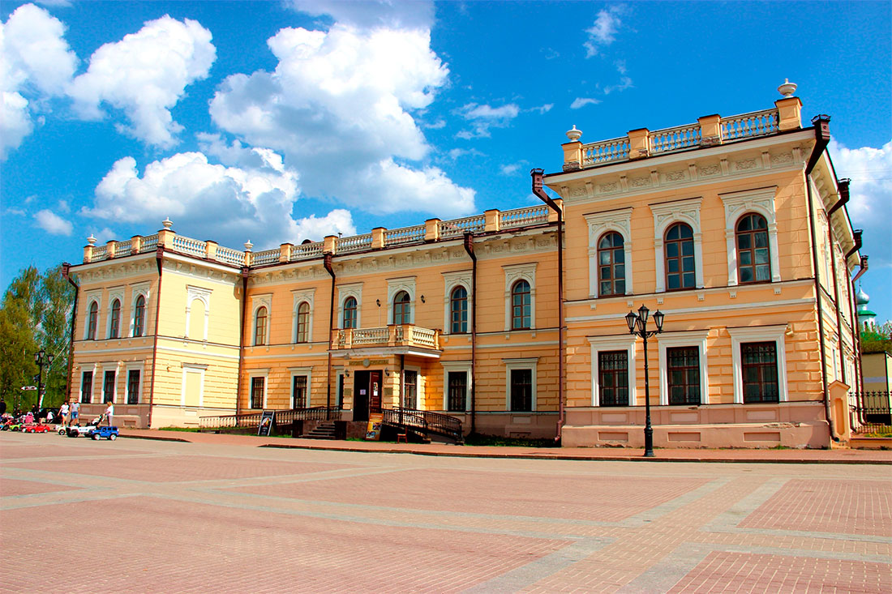
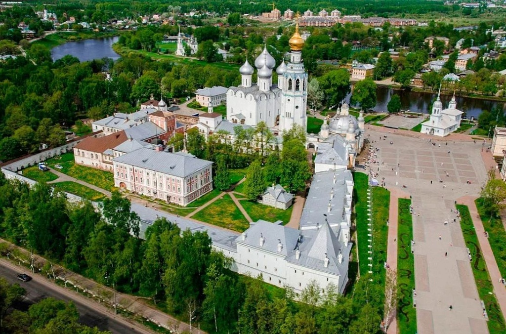
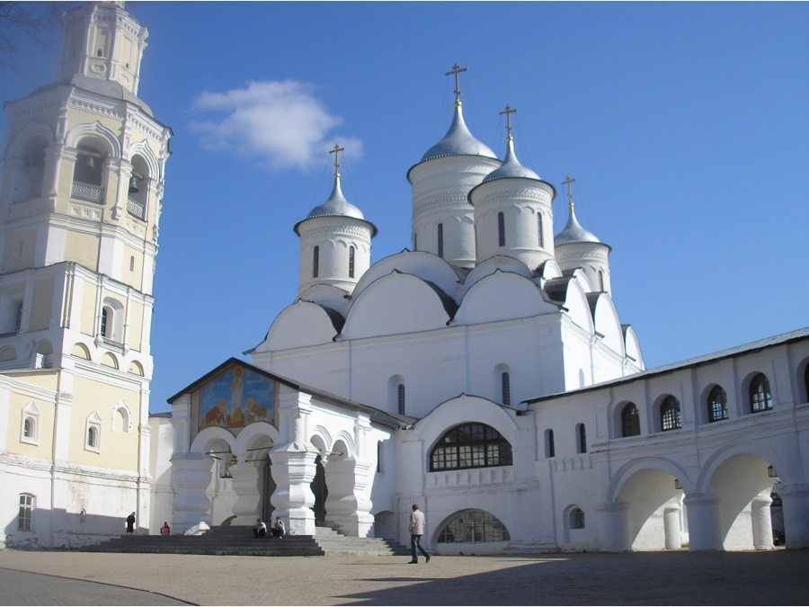

Добро пожаловать в Вологду
О Вологде
Вологда — это удивительный город с богатой историей и культурным наследием. Здесь вы найдете прекрасные архитектурные памятники, музеи, исторические места и многое другое.
Интересные места в Вологде
В Вологде есть множество интересных мест для посещения, такие как...
Музей Вологодского кружева
Музей Вологодского кружева представляет собой уникальное место, где живет и дышит искусство вязания кружев. Этот музей находится в самом сердце Вологды и является одной из главных достопримечательностей города. В музее вы сможете погрузиться в удивительный мир вологодского кружева и узнать его историю, начиная с давних времен. Здесь вы найдете удивительные экспонаты, созданные искусными руками мастериц, а также узнаете о технике и методах создания этого уникального вида рукоделия. Посещение Музея Вологодского кружева позволит вам не только насладиться красотой кружевных произведений и мастерства их авторов, но и узнать о важной части культурного наследия Вологодской области. Этот музей предоставляет увлекательное путешествие в мир вологодского кружевоплетения и является обязательным местом для посещения всем, кто интересуется рукоделием и искусством.
Вологодский кремль
Вологодский кремль — это древняя крепость и исторический комплекс, расположенный в центре Вологды, Россия. Вологодский кремль является историческим символом города и важным туристическим местом, привлекающим множество посетителей. Кремль был построен в конце XV века и служил важной оборонительной и административной структурой на протяжении многих веков.
Спасская церковь
Спасская церковь - это прекрасный образец русской деревянной архитектуры. Она была построена в XVIII веке и служила духовным и культурным центром для местных жителей. Спасская церковь известна своей красочной резьбой и декоративными элементами. Это замечательное место для исторического и культурного осмотра в Вологде.
Свяжитесь с нами
Если у вас есть вопросы или вы хотите узнать больше о Вологде, свяжитесь с нами по адресу ivanushkaof04@gmail.com.